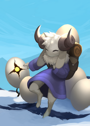

Play as Yolka, a mountain goat who found an unknown egg. Keep the egg warm as you navigate the 3 distinct worlds, and bring it to the hottest place you know:
the depths of a volcano.
PLAY

The Gunwyrm is tasked with destroying invaders, gathering parts to make its next iteration even more powerful. When the timer runs out, the next Gunwyrm
activates, and the cycle continues!
PLAY
Phractionated is an interactive puzzle game that takes place in a mysterious atmosphere in which you will have to solve different kinds of puzzles in order to progress...
The immune crystal is under attack! Just when all hope seems lost, the vigilant Pill Ship comes to save the day, no disease can combat this scrapper's
arsenal.
PLAY